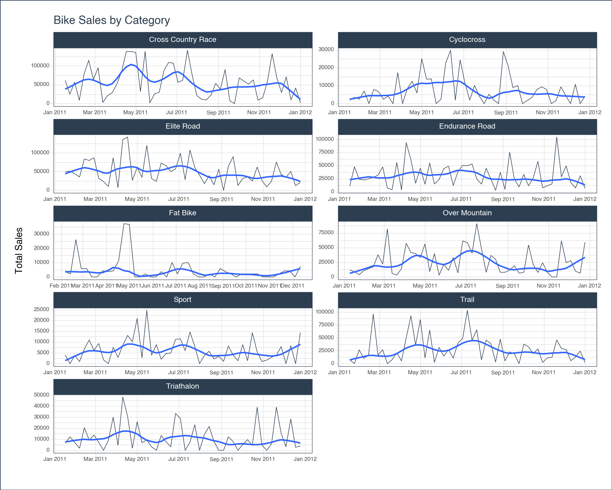
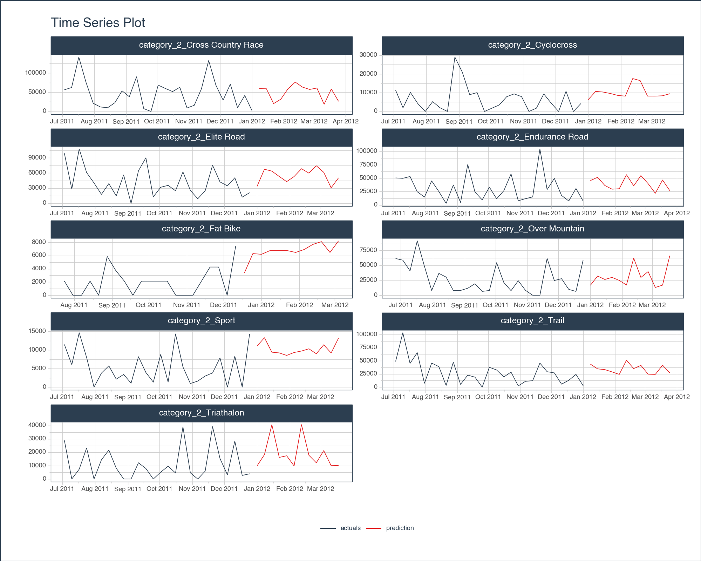

Code
import pytimetk as tk
import pandas as pd
import numpy as np
from sklearn.ensemble import RandomForestRegressor
from sklearn.model_selection import train_test_splitIn this tutorial, we will use pytimetk and its powerful functions to perform a time series analysis on a dataset representing bike sales. Our goal is to understand the patterns in the data and forecast future sales. You will:
tk.summarize_by_timetk.plot_timeseriestk.pad_by_time and tk.future_frame to prepare data for modelingtk.augment_timeseries_signature and tk.agument_lagssklearnIf you do not have pytimetk installed, you can install by using
or for the latest features and functionality, you can install the development version.
To kick off our analysis, we’ll begin by importing essential libraries and accessing the ‘bike_sales’ dataset available within pytimetk’s suite of built-in datasets.
The Bike Sales dataset exemplifies what one might find in a CRM (Customer Relationship Management) system. CRM systems are pivotal for businesses, offering vital insights by tracking sales throughout the entire sales funnel. Such datasets are rich with transaction-level data, encompassing elements like order numbers, individual order lines, customer details, product information, and specific transaction data.
Transactional data, such as this, inherently holds the essential components for time series analysis:
Given these attributes, the Bike Sales dataset emerges as an ideal candidate for analysis using pytimetk.
tk.glimpseTo get a preliminary understanding of our data, let’s utilize the tk.glimpse() function from pytimetk. This will provide us with a snapshot of the available fields, their respective data types, and a sneak peek into the data entries.
<class 'pandas.core.frame.DataFrame'>: 2466 rows of 13 columns
order_id: int64 [1, 1, 2, 2, 3, 3, 3, 3, 3, 4, 5, 5, ...
order_line: int64 [1, 2, 1, 2, 1, 2, 3, 4, 5, 1, 1, 2, ...
order_date: datetime64[ns] [Timestamp('2011-01-07 00:00:00'), Ti ...
quantity: int64 [1, 1, 1, 1, 1, 1, 1, 1, 1, 1, 1, 2, ...
price: int64 [6070, 5970, 2770, 5970, 10660, 3200, ...
total_price: int64 [6070, 5970, 2770, 5970, 10660, 3200, ...
model: object ['Jekyll Carbon 2', 'Trigger Carbon 2 ...
category_1: object ['Mountain', 'Mountain', 'Mountain', ...
category_2: object ['Over Mountain', 'Over Mountain', 'T ...
frame_material: object ['Carbon', 'Carbon', 'Aluminum', 'Car ...
bikeshop_name: object ['Ithaca Mountain Climbers', 'Ithaca ...
city: object ['Ithaca', 'Ithaca', 'Kansas City', ' ...
state: object ['NY', 'NY', 'KS', 'KS', 'KY', 'KY', ...tk.summarize_by_timeCRM data is often bustling with activity, reflecting the myriad of transactions happening daily. Due to this high volume, the data can sometimes seem overwhelming or noisy. To derive meaningful insights, it’s essential to aggregate this data over specific time intervals. This is where tk.summarize_by_time() comes into play.
The tk.summarize_by_time() function offers a streamlined approach to time-based data aggregation. By defining a desired frequency and an aggregation method, this function seamlessly organizes your data. The beauty of it is its versatility; from a broad array of built-in aggregation methods and frequencies to the flexibility of integrating a custom function, it caters to a range of requirements.
tk.summarize_by_time()
Curious about the various options it provides?
help(tk.summarize_by_time) to review additional helpful documentation. And explore the plethora of possibilities!We can quickly get totals by week with summarize_byt_time.
| order_date | total_price_sum | |
|---|---|---|
| 0 | 2011-01-09 | 12040 |
| 1 | 2011-01-16 | 151460 |
| 2 | 2011-01-23 | 143850 |
| 3 | 2011-01-30 | 175665 |
| 4 | 2011-02-06 | 105210 |
| 5 | 2011-02-13 | 250390 |
| 6 | 2011-02-20 | 410595 |
| 7 | 2011-02-27 | 254045 |
| 8 | 2011-03-06 | 308420 |
| 9 | 2011-03-13 | 45450 |
To better understand your data, you might want to add groups to this summary. We can include a groupby before the summarize_by_time and then aggregate our data.
| category_2 | order_date | total_price_sum | |
|---|---|---|---|
| 0 | Cross Country Race | 2011-01-16 | 61750 |
| 1 | Cross Country Race | 2011-01-23 | 25050 |
| 2 | Cross Country Race | 2011-01-30 | 56860 |
| 3 | Cross Country Race | 2011-02-06 | 8740 |
| 4 | Cross Country Race | 2011-02-13 | 78070 |
| 5 | Cross Country Race | 2011-02-20 | 115010 |
| 6 | Cross Country Race | 2011-02-27 | 64290 |
| 7 | Cross Country Race | 2011-03-06 | 95070 |
| 8 | Cross Country Race | 2011-03-13 | 3200 |
| 9 | Cross Country Race | 2011-03-20 | 21170 |
This long format can make it a little hard to compare the different group values visually, so instead of long-format you might want to pivot wide to view the data.
| order_date | total_price_sum_Cross Country Race | total_price_sum_Cyclocross | total_price_sum_Elite Road | total_price_sum_Endurance Road | total_price_sum_Fat Bike | total_price_sum_Over Mountain | total_price_sum_Sport | total_price_sum_Trail | total_price_sum_Triathalon | |
|---|---|---|---|---|---|---|---|---|---|---|
| 0 | 2011-01-09 | 0.0 | 0.0 | 0.0 | 0.0 | 0.0 | 12040.0 | 0.0 | 0.0 | 0.0 |
| 1 | 2011-01-16 | 61750.0 | 1960.0 | 49540.0 | 11110.0 | 0.0 | 9170.0 | 4030.0 | 7450.0 | 6450.0 |
| 2 | 2011-01-23 | 25050.0 | 3500.0 | 51330.0 | 47930.0 | 0.0 | 3840.0 | 0.0 | 0.0 | 12200.0 |
| 3 | 2011-01-30 | 56860.0 | 2450.0 | 43895.0 | 24160.0 | 0.0 | 10880.0 | 3720.0 | 26700.0 | 7000.0 |
| 4 | 2011-02-06 | 8740.0 | 7000.0 | 35640.0 | 22680.0 | 3730.0 | 14270.0 | 980.0 | 10220.0 | 1950.0 |
| 5 | 2011-02-13 | 78070.0 | 0.0 | 83780.0 | 24820.0 | 2130.0 | 17160.0 | 6810.0 | 17120.0 | 20500.0 |
| 6 | 2011-02-20 | 115010.0 | 7910.0 | 79770.0 | 27650.0 | 26100.0 | 37830.0 | 10925.0 | 96250.0 | 9150.0 |
| 7 | 2011-02-27 | 64290.0 | 6650.0 | 86900.0 | 31900.0 | 5860.0 | 22070.0 | 6165.0 | 16410.0 | 13800.0 |
| 8 | 2011-03-06 | 95070.0 | 2450.0 | 31990.0 | 47660.0 | 5860.0 | 82060.0 | 9340.0 | 26790.0 | 7200.0 |
| 9 | 2011-03-13 | 3200.0 | 4200.0 | 23110.0 | 7260.0 | 0.0 | 5970.0 | 1710.0 | 0.0 | 0.0 |
You can now observe the total sales for each product side by side. This streamlined view facilitates easy comparison between product sales.
tk.plot_timeseriesYou can now visualize the summarized data to gain a clearer insight into the prevailing trends.
sales_by_week \
.groupby('category_2') \
.plot_timeseries(
date_column = 'order_date',
value_column = 'total_price_sum',
title = 'Bike Sales by Category',
facet_ncol = 2,
facet_scales = "free",
y_intercept_color = tk.palette_timetk()['steel_blue'],
width = 1000,
height = 800,
y_lab = 'Total Sales',
engine = 'plotly'
)sales_by_week \
.groupby('category_2') \
.plot_timeseries(
date_column = 'order_date',
value_column = 'total_price_sum',
title = 'Bike Sales by Category',
facet_ncol = 2,
facet_scales = "free",
y_intercept_color = tk.palette_timetk()['steel_blue'],
width = 1000,
height = 800,
y_lab = 'Total Sales',
engine = 'plotnine'
)
<Figure Size: (1000 x 800)>The graph showcases a pronounced uptick in sales for most of the different bike products during the summer. It’s a natural trend, aligning with our understanding that people gravitate towards biking during the balmy summer days. Conversely, as the chill of winter sets in at the year’s start and end, we observe a corresponding dip in sales.
It’s worth highlighting the elegance of the plot_timeseries function. Beyond just plotting raw data, it introduces a smoother, accentuating underlying trends and making them more discernible. This enhancement ensures we can effortlessly capture and comprehend the cyclical nature of bike sales throughout the year.
Forecasting future sales for bikes requires meticulous data preparation, and pytimetk streamlines this process for us. When crafting a Machine Learning model tailored for time series analysis, there are several pivotal steps to follow:
Time Padding for Comprehensive Historical Data: It’s essential to ensure that our data captures every week, even those that witnessed zero sales. This padding becomes especially pertinent when integrating time series features, like lags.
Crafting the Future Frame: This step involves setting up a structure that accommodates the test data features, which will eventually be fed into our prediction function.
Infusing Time Series Lag Features: These features are critical for capturing patterns in time series data, and they need to be integrated into our future frame.
Feature / Date Augmentation: This step can involve adding contextual features that might influence sales, such as date features, holidays, promotional events, etc.
Model Training: Once the data is prepped, it’s time to train our Machine Learning model, refining it to understand historical patterns and predict future trends.
Making Predictions: After training, the model is ready to forecast sales for future periods based on the features of the new data.
tk.pad_by_timeKicking off our journey, we’ll utilize pytimetk’s tk.pad_by_time() function. For this, grouping by the ‘category_1’ variable is recommended. Moreover, it’s prudent to establish a definitive end date. This ensures that all groups are equipped with training data up to the most recent date, accommodating scenarios where certain categories might have seen no sales in the final training week. By doing so, we create a representative observation for every group, capturing the nuances of each category’s sales pattern.
| category_2 | order_date | total_price_sum | |
|---|---|---|---|
| 0 | Cross Country Race | 2011-01-09 | NaN |
| 1 | Cross Country Race | 2011-01-16 | 61750.0 |
| 2 | Cross Country Race | 2011-01-23 | 25050.0 |
| 3 | Cross Country Race | 2011-01-30 | 56860.0 |
| 4 | Cross Country Race | 2011-02-06 | 8740.0 |
| ... | ... | ... | ... |
| 463 | Triathalon | 2011-12-04 | 3200.0 |
| 464 | Triathalon | 2011-12-11 | 28350.0 |
| 465 | Triathalon | 2011-12-18 | 2700.0 |
| 466 | Triathalon | 2011-12-25 | 3900.0 |
| 467 | Triathalon | 2012-01-01 | NaN |
468 rows × 3 columns
tk.future_frameMoving on, let’s set up the future frame, which will serve as our test dataset. To achieve this, employ the tk.future_frame() method. This function allows for the specification of a grouping column and a forecast horizon.
Upon invoking tk.future_frame(), you’ll observe that placeholders (null values) are added for each group, extending 12 weeks into the future.
| category_2 | order_date | total_price_sum | |
|---|---|---|---|
| 0 | Cross Country Race | 2011-01-09 | NaN |
| 1 | Cross Country Race | 2011-01-16 | 61750.0 |
| 2 | Cross Country Race | 2011-01-23 | 25050.0 |
| 3 | Cross Country Race | 2011-01-30 | 56860.0 |
| 4 | Cross Country Race | 2011-02-06 | 8740.0 |
| ... | ... | ... | ... |
| 571 | Triathalon | 2012-02-26 | NaN |
| 572 | Triathalon | 2012-03-04 | NaN |
| 573 | Triathalon | 2012-03-11 | NaN |
| 574 | Triathalon | 2012-03-18 | NaN |
| 575 | Triathalon | 2012-03-25 | NaN |
576 rows × 3 columns
tk.augment_lagsCrafting features from time series data can be intricate, but thanks to the suite of feature engineering tools in pytimetk, the process is streamlined and intuitive.
In this guide, we’ll focus on the basics: introducing a few lag variables and incorporating some date-related features.
Firstly, let’s dive into creating lag features.
Given our forecasting objective of a 12-week horizon, to ensure we have lag data available for every future point, we should utilize a lag of 12 or more. The beauty of the toolkit is that it supports the addition of multiple lags simultaneously.
Lag features play a pivotal role in machine learning for time series. Often, recent data offers valuable insights into future trends. To capture this recency effect, it’s crucial to integrate lag values. For this purpose, tk.augment_lags() comes in handy.
| category_2 | order_date | total_price_sum | total_price_sum_lag_12 | total_price_sum_lag_24 | |
|---|---|---|---|---|---|
| 0 | Cross Country Race | 2011-01-09 | NaN | NaN | NaN |
| 1 | Cross Country Race | 2011-01-16 | 61750.0 | NaN | NaN |
| 2 | Cross Country Race | 2011-01-23 | 25050.0 | NaN | NaN |
| 3 | Cross Country Race | 2011-01-30 | 56860.0 | NaN | NaN |
| 4 | Cross Country Race | 2011-02-06 | 8740.0 | NaN | NaN |
| 5 | Cross Country Race | 2011-02-13 | 78070.0 | NaN | NaN |
| 6 | Cross Country Race | 2011-02-20 | 115010.0 | NaN | NaN |
| 7 | Cross Country Race | 2011-02-27 | 64290.0 | NaN | NaN |
| 8 | Cross Country Race | 2011-03-06 | 95070.0 | NaN | NaN |
| 9 | Cross Country Race | 2011-03-13 | 3200.0 | NaN | NaN |
| 10 | Cross Country Race | 2011-03-20 | 21170.0 | NaN | NaN |
| 11 | Cross Country Race | 2011-03-27 | 28990.0 | NaN | NaN |
| 12 | Cross Country Race | 2011-04-03 | 51860.0 | NaN | NaN |
| 13 | Cross Country Race | 2011-04-10 | 85910.0 | 61750.0 | NaN |
| 14 | Cross Country Race | 2011-04-17 | 138230.0 | 25050.0 | NaN |
| 15 | Cross Country Race | 2011-04-24 | 138350.0 | 56860.0 | NaN |
| 16 | Cross Country Race | 2011-05-01 | 136090.0 | 8740.0 | NaN |
| 17 | Cross Country Race | 2011-05-08 | 32110.0 | 78070.0 | NaN |
| 18 | Cross Country Race | 2011-05-15 | 139010.0 | 115010.0 | NaN |
| 19 | Cross Country Race | 2011-05-22 | 2060.0 | 64290.0 | NaN |
| 20 | Cross Country Race | 2011-05-29 | 26130.0 | 95070.0 | NaN |
| 21 | Cross Country Race | 2011-06-05 | 30360.0 | 3200.0 | NaN |
| 22 | Cross Country Race | 2011-06-12 | 88280.0 | 21170.0 | NaN |
| 23 | Cross Country Race | 2011-06-19 | 109470.0 | 28990.0 | NaN |
| 24 | Cross Country Race | 2011-06-26 | 107280.0 | 51860.0 | NaN |
Observe that lag values of 12 and 24 introduce missing entries at the dataset’s outset. This occurs because there isn’t available data from 12 or 24 weeks prior. To address these gaps, you can adopt one of two strategies:
Discard the Affected Rows: This is a recommended approach if your dataset is sufficiently large. Removing a few initial rows might not significantly impact the training process.
Backfill Missing Values: In situations with limited data, you might consider backfilling these nulls using the first available values from lag 12 and 24. However, the appropriateness of this technique hinges on your specific context and objectives.
For the scope of this tutorial, we’ll opt to remove these rows. However, it’s worth pointing out that our dataset is quite small with limited historical data, so this might impact our model.
| category_2 | order_date | total_price_sum | total_price_sum_lag_12 | total_price_sum_lag_24 | |
|---|---|---|---|---|---|
| 25 | Cross Country Race | 2011-07-03 | 56430.0 | 85910.0 | 61750.0 |
| 26 | Cross Country Race | 2011-07-10 | 62320.0 | 138230.0 | 25050.0 |
| 27 | Cross Country Race | 2011-07-17 | 141620.0 | 138350.0 | 56860.0 |
| 28 | Cross Country Race | 2011-07-24 | 75720.0 | 136090.0 | 8740.0 |
| 29 | Cross Country Race | 2011-07-31 | 21240.0 | 32110.0 | 78070.0 |
tk.augment_timeseries_signatureNow, let’s enrich our dataset with date-related features.
With the function tk.augment_timeseries_signature(), you can effortlessly append 29 date attributes to a timestamp. Given that our dataset captures weekly intervals, certain attributes like ‘hour’ may not be pertinent. Thus, it’s prudent to refine our columns, retaining only those that truly matter to our analysis.
| category_2 | order_date | total_price_sum | total_price_sum_lag_12 | total_price_sum_lag_24 | order_date_index_num | order_date_year | order_date_year_iso | order_date_yearstart | order_date_yearend | ... | order_date_mday | order_date_qday | order_date_yday | order_date_weekend | order_date_hour | order_date_minute | order_date_second | order_date_msecond | order_date_nsecond | order_date_am_pm | |
|---|---|---|---|---|---|---|---|---|---|---|---|---|---|---|---|---|---|---|---|---|---|
| 25 | Cross Country Race | 2011-07-03 | 56430.0 | 85910.0 | 61750.0 | 1309651200 | 2011 | 2011 | 0 | 0 | ... | 3 | 3 | 184 | 1 | 0 | 0 | 0 | 0 | 0 | am |
| 26 | Cross Country Race | 2011-07-10 | 62320.0 | 138230.0 | 25050.0 | 1310256000 | 2011 | 2011 | 0 | 0 | ... | 10 | 10 | 191 | 1 | 0 | 0 | 0 | 0 | 0 | am |
| 27 | Cross Country Race | 2011-07-17 | 141620.0 | 138350.0 | 56860.0 | 1310860800 | 2011 | 2011 | 0 | 0 | ... | 17 | 17 | 198 | 1 | 0 | 0 | 0 | 0 | 0 | am |
| 28 | Cross Country Race | 2011-07-24 | 75720.0 | 136090.0 | 8740.0 | 1311465600 | 2011 | 2011 | 0 | 0 | ... | 24 | 24 | 205 | 1 | 0 | 0 | 0 | 0 | 0 | am |
| 29 | Cross Country Race | 2011-07-31 | 21240.0 | 32110.0 | 78070.0 | 1312070400 | 2011 | 2011 | 0 | 0 | ... | 31 | 31 | 212 | 1 | 0 | 0 | 0 | 0 | 0 | am |
| 30 | Cross Country Race | 2011-08-07 | 11620.0 | 139010.0 | 115010.0 | 1312675200 | 2011 | 2011 | 0 | 0 | ... | 7 | 38 | 219 | 1 | 0 | 0 | 0 | 0 | 0 | am |
| 31 | Cross Country Race | 2011-08-14 | 9730.0 | 2060.0 | 64290.0 | 1313280000 | 2011 | 2011 | 0 | 0 | ... | 14 | 45 | 226 | 1 | 0 | 0 | 0 | 0 | 0 | am |
| 32 | Cross Country Race | 2011-08-21 | 22780.0 | 26130.0 | 95070.0 | 1313884800 | 2011 | 2011 | 0 | 0 | ... | 21 | 52 | 233 | 1 | 0 | 0 | 0 | 0 | 0 | am |
| 33 | Cross Country Race | 2011-08-28 | 53680.0 | 30360.0 | 3200.0 | 1314489600 | 2011 | 2011 | 0 | 0 | ... | 28 | 59 | 240 | 1 | 0 | 0 | 0 | 0 | 0 | am |
| 34 | Cross Country Race | 2011-09-04 | 38360.0 | 88280.0 | 21170.0 | 1315094400 | 2011 | 2011 | 0 | 0 | ... | 4 | 66 | 247 | 1 | 0 | 0 | 0 | 0 | 0 | am |
10 rows × 34 columns
We can quickly get a sense of what features were just created using tk.glimpse.
<class 'pandas.core.frame.DataFrame'>: 341 rows of 34 columns
category_2: object ['Cross Country Race', 'Cros ...
order_date: datetime64[ns] [Timestamp('2011-07-03 00:00 ...
total_price_sum: float64 [56430.0, 62320.0, 141620.0, ...
total_price_sum_lag_12: float64 [85910.0, 138230.0, 138350.0 ...
total_price_sum_lag_24: float64 [61750.0, 25050.0, 56860.0, ...
order_date_index_num: int64 [1309651200, 1310256000, 131 ...
order_date_year: int64 [2011, 2011, 2011, 2011, 201 ...
order_date_year_iso: UInt32 [2011, 2011, 2011, 2011, 201 ...
order_date_yearstart: uint8 [0, 0, 0, 0, 0, 0, 0, 0, 0, ...
order_date_yearend: uint8 [0, 0, 0, 0, 0, 0, 0, 0, 0, ...
order_date_leapyear: uint8 [0, 0, 0, 0, 0, 0, 0, 0, 0, ...
order_date_half: int64 [2, 2, 2, 2, 2, 2, 2, 2, 2, ...
order_date_quarter: int64 [3, 3, 3, 3, 3, 3, 3, 3, 3, ...
order_date_quarteryear: object ['2011Q3', '2011Q3', '2011Q3 ...
order_date_quarterstart: uint8 [0, 0, 0, 0, 0, 0, 0, 0, 0, ...
order_date_quarterend: uint8 [0, 0, 0, 0, 0, 0, 0, 0, 0, ...
order_date_month: int64 [7, 7, 7, 7, 7, 8, 8, 8, 8, ...
order_date_month_lbl: object ['July', 'July', 'July', 'Ju ...
order_date_monthstart: uint8 [0, 0, 0, 0, 0, 0, 0, 0, 0, ...
order_date_monthend: uint8 [0, 0, 0, 0, 1, 0, 0, 0, 0, ...
order_date_yweek: UInt32 [26, 27, 28, 29, 30, 31, 32, ...
order_date_mweek: int64 [1, 2, 3, 4, 5, 1, 2, 3, 4, ...
order_date_wday: int64 [7, 7, 7, 7, 7, 7, 7, 7, 7, ...
order_date_wday_lbl: object ['Sunday', 'Sunday', 'Sunday ...
order_date_mday: int64 [3, 10, 17, 24, 31, 7, 14, 2 ...
order_date_qday: int64 [3, 10, 17, 24, 31, 38, 45, ...
order_date_yday: int64 [184, 191, 198, 205, 212, 21 ...
order_date_weekend: int64 [1, 1, 1, 1, 1, 1, 1, 1, 1, ...
order_date_hour: int64 [0, 0, 0, 0, 0, 0, 0, 0, 0, ...
order_date_minute: int64 [0, 0, 0, 0, 0, 0, 0, 0, 0, ...
order_date_second: int64 [0, 0, 0, 0, 0, 0, 0, 0, 0, ...
order_date_msecond: int64 [0, 0, 0, 0, 0, 0, 0, 0, 0, ...
order_date_nsecond: int64 [0, 0, 0, 0, 0, 0, 0, 0, 0, ...
order_date_am_pm: object ['am', 'am', 'am', 'am', 'am ...Let’s subset to just a few of the relevant date features. Let’s use tk.glimpse again.
<class 'pandas.core.frame.DataFrame'>: 341 rows of 10 columns
order_date: datetime64[ns] [Timestamp('2011-07-03 00:00: ...
category_2: object ['Cross Country Race', 'Cross ...
total_price_sum: float64 [56430.0, 62320.0, 141620.0, ...
total_price_sum_lag_12: float64 [85910.0, 138230.0, 138350.0, ...
total_price_sum_lag_24: float64 [61750.0, 25050.0, 56860.0, 8 ...
order_date_year: int64 [2011, 2011, 2011, 2011, 2011 ...
order_date_half: int64 [2, 2, 2, 2, 2, 2, 2, 2, 2, 2 ...
order_date_quarter: int64 [3, 3, 3, 3, 3, 3, 3, 3, 3, 3 ...
order_date_month: int64 [7, 7, 7, 7, 7, 8, 8, 8, 8, 9 ...
order_date_yweek: UInt32 [26, 27, 28, 29, 30, 31, 32, ...The final phase in our feature engineering journey is one-hot encoding our categorical variables. While certain machine learning models like CatBoost can natively handle categorical data, many cannot. Enter one-hot encoding, a technique that transforms each category within a column into its separate column, marking its presence with a ‘1’ or absence with a ‘0’.
For this transformation, the handy pd.get_dummies() function from pandas comes to the rescue.
<class 'pandas.core.frame.DataFrame'>: 341 rows of 18 columns
order_date: datetime64[ns] [Timestamp('2011-07-03 ...
total_price_sum: float64 [56430.0, 62320.0, 141 ...
total_price_sum_lag_12: float64 [85910.0, 138230.0, 13 ...
total_price_sum_lag_24: float64 [61750.0, 25050.0, 568 ...
order_date_year: int64 [2011, 2011, 2011, 201 ...
order_date_half: int64 [2, 2, 2, 2, 2, 2, 2, ...
order_date_quarter: int64 [3, 3, 3, 3, 3, 3, 3, ...
order_date_month: int64 [7, 7, 7, 7, 7, 8, 8, ...
order_date_yweek: UInt32 [26, 27, 28, 29, 30, 3 ...
category_2_Cross Country Race: uint8 [1, 1, 1, 1, 1, 1, 1, ...
category_2_Cyclocross: uint8 [0, 0, 0, 0, 0, 0, 0, ...
category_2_Elite Road: uint8 [0, 0, 0, 0, 0, 0, 0, ...
category_2_Endurance Road: uint8 [0, 0, 0, 0, 0, 0, 0, ...
category_2_Fat Bike: uint8 [0, 0, 0, 0, 0, 0, 0, ...
category_2_Over Mountain: uint8 [0, 0, 0, 0, 0, 0, 0, ...
category_2_Sport: uint8 [0, 0, 0, 0, 0, 0, 0, ...
category_2_Trail: uint8 [0, 0, 0, 0, 0, 0, 0, ...
category_2_Triathalon: uint8 [0, 0, 0, 0, 0, 0, 0, ...Pytimetk offers an extensive array of feature engineering tools and augmentation functions, giving you a broad spectrum of possibilities. However, for the purposes of this tutorial, let’s shift our focus to modeling.
Let’s proceed by segmenting our dataframe into training and future sets.
Let’s focus on the columns essential for training. You’ll observe that we’ve excluded the ‘order_date’ column. This is because numerous machine learning models struggle with date data types. This is precisely why we utilized the tk.augment_timeseries_signature earlier—to transform date features into a format that’s compatible with ML models.
We can quickly see what features we have available with tk.glimpse().
<class 'pandas.core.frame.DataFrame'>: 233 rows of 18 columns
order_date: datetime64[ns] [Timestamp('2011-07-03 ...
total_price_sum: float64 [56430.0, 62320.0, 141 ...
total_price_sum_lag_12: float64 [85910.0, 138230.0, 13 ...
total_price_sum_lag_24: float64 [61750.0, 25050.0, 568 ...
order_date_year: int64 [2011, 2011, 2011, 201 ...
order_date_half: int64 [2, 2, 2, 2, 2, 2, 2, ...
order_date_quarter: int64 [3, 3, 3, 3, 3, 3, 3, ...
order_date_month: int64 [7, 7, 7, 7, 7, 8, 8, ...
order_date_yweek: UInt32 [26, 27, 28, 29, 30, 3 ...
category_2_Cross Country Race: uint8 [1, 1, 1, 1, 1, 1, 1, ...
category_2_Cyclocross: uint8 [0, 0, 0, 0, 0, 0, 0, ...
category_2_Elite Road: uint8 [0, 0, 0, 0, 0, 0, 0, ...
category_2_Endurance Road: uint8 [0, 0, 0, 0, 0, 0, 0, ...
category_2_Fat Bike: uint8 [0, 0, 0, 0, 0, 0, 0, ...
category_2_Over Mountain: uint8 [0, 0, 0, 0, 0, 0, 0, ...
category_2_Sport: uint8 [0, 0, 0, 0, 0, 0, 0, ...
category_2_Trail: uint8 [0, 0, 0, 0, 0, 0, 0, ...
category_2_Triathalon: uint8 [0, 0, 0, 0, 0, 0, 0, ...Now for some machine learning.
Let’s create a RandomForestRegressor to predict future sales patterns.
train_columns = [ 'total_price_sum_lag_12',
'total_price_sum_lag_24', 'order_date_year', 'order_date_half',
'order_date_quarter', 'order_date_month', 'order_date_yweek','category_2_Cross Country Race', 'category_2_Cyclocross',
'category_2_Elite Road', 'category_2_Endurance Road',
'category_2_Fat Bike', 'category_2_Over Mountain', 'category_2_Sport',
'category_2_Trail', 'category_2_Triathalon']
X = train[train_columns]
y = train[['total_price_sum']]
model = RandomForestRegressor(random_state=123)
model = model.fit(X, y)We now have a fitted model, and can use this to predict sales from our future frame.
| order_date | total_price_sum | total_price_sum_lag_12 | total_price_sum_lag_24 | order_date_year | order_date_half | order_date_quarter | order_date_month | order_date_yweek | category_2_Cross Country Race | category_2_Cyclocross | category_2_Elite Road | category_2_Endurance Road | category_2_Fat Bike | category_2_Over Mountain | category_2_Sport | category_2_Trail | category_2_Triathalon | y_pred | |
|---|---|---|---|---|---|---|---|---|---|---|---|---|---|---|---|---|---|---|---|
| 468 | 2012-01-08 | NaN | 51820.0 | 75720.0 | 2012 | 1 | 1 | 1 | 1 | 1 | 0 | 0 | 0 | 0 | 0 | 0 | 0 | 0 | 59462.00 |
| 469 | 2012-01-15 | NaN | 62940.0 | 21240.0 | 2012 | 1 | 1 | 1 | 2 | 1 | 0 | 0 | 0 | 0 | 0 | 0 | 0 | 0 | 59149.45 |
| 470 | 2012-01-22 | NaN | 9060.0 | 11620.0 | 2012 | 1 | 1 | 1 | 3 | 1 | 0 | 0 | 0 | 0 | 0 | 0 | 0 | 0 | 20458.40 |
| 471 | 2012-01-29 | NaN | 15980.0 | 9730.0 | 2012 | 1 | 1 | 1 | 4 | 1 | 0 | 0 | 0 | 0 | 0 | 0 | 0 | 0 | 31914.00 |
| 472 | 2012-02-05 | NaN | 59180.0 | 22780.0 | 2012 | 1 | 1 | 2 | 5 | 1 | 0 | 0 | 0 | 0 | 0 | 0 | 0 | 0 | 59128.95 |
| 473 | 2012-02-12 | NaN | 132550.0 | 53680.0 | 2012 | 1 | 1 | 2 | 6 | 1 | 0 | 0 | 0 | 0 | 0 | 0 | 0 | 0 | 76397.50 |
| 474 | 2012-02-19 | NaN | 68430.0 | 38360.0 | 2012 | 1 | 1 | 2 | 7 | 1 | 0 | 0 | 0 | 0 | 0 | 0 | 0 | 0 | 63497.80 |
| 475 | 2012-02-26 | NaN | 29470.0 | 90290.0 | 2012 | 1 | 1 | 2 | 8 | 1 | 0 | 0 | 0 | 0 | 0 | 0 | 0 | 0 | 57332.00 |
| 476 | 2012-03-04 | NaN | 71080.0 | 7380.0 | 2012 | 1 | 1 | 3 | 9 | 1 | 0 | 0 | 0 | 0 | 0 | 0 | 0 | 0 | 60981.30 |
| 477 | 2012-03-11 | NaN | 9800.0 | 0.0 | 2012 | 1 | 1 | 3 | 10 | 1 | 0 | 0 | 0 | 0 | 0 | 0 | 0 | 0 | 18738.15 |
Now let us do a little cleanup. For ease in plotting later, let’s add a column to track the actuals vs. the predicted values.
| order_date | total_price_sum | total_price_sum_lag_12 | total_price_sum_lag_24 | order_date_year | order_date_half | order_date_quarter | order_date_month | order_date_yweek | category_2_Cross Country Race | category_2_Cyclocross | category_2_Elite Road | category_2_Endurance Road | category_2_Fat Bike | category_2_Over Mountain | category_2_Sport | category_2_Trail | category_2_Triathalon | type | y_pred | |
|---|---|---|---|---|---|---|---|---|---|---|---|---|---|---|---|---|---|---|---|---|
| 25 | 2011-07-03 | 56430.0 | 85910.0 | 61750.0 | 2011 | 2 | 3 | 7 | 26 | 1 | 0 | 0 | 0 | 0 | 0 | 0 | 0 | 0 | actuals | NaN |
| 26 | 2011-07-10 | 62320.0 | 138230.0 | 25050.0 | 2011 | 2 | 3 | 7 | 27 | 1 | 0 | 0 | 0 | 0 | 0 | 0 | 0 | 0 | actuals | NaN |
| 27 | 2011-07-17 | 141620.0 | 138350.0 | 56860.0 | 2011 | 2 | 3 | 7 | 28 | 1 | 0 | 0 | 0 | 0 | 0 | 0 | 0 | 0 | actuals | NaN |
| 28 | 2011-07-24 | 75720.0 | 136090.0 | 8740.0 | 2011 | 2 | 3 | 7 | 29 | 1 | 0 | 0 | 0 | 0 | 0 | 0 | 0 | 0 | actuals | NaN |
| 29 | 2011-07-31 | 21240.0 | 32110.0 | 78070.0 | 2011 | 2 | 3 | 7 | 30 | 1 | 0 | 0 | 0 | 0 | 0 | 0 | 0 | 0 | actuals | NaN |
| 30 | 2011-08-07 | 11620.0 | 139010.0 | 115010.0 | 2011 | 2 | 3 | 8 | 31 | 1 | 0 | 0 | 0 | 0 | 0 | 0 | 0 | 0 | actuals | NaN |
| 31 | 2011-08-14 | 9730.0 | 2060.0 | 64290.0 | 2011 | 2 | 3 | 8 | 32 | 1 | 0 | 0 | 0 | 0 | 0 | 0 | 0 | 0 | actuals | NaN |
| 32 | 2011-08-21 | 22780.0 | 26130.0 | 95070.0 | 2011 | 2 | 3 | 8 | 33 | 1 | 0 | 0 | 0 | 0 | 0 | 0 | 0 | 0 | actuals | NaN |
| 33 | 2011-08-28 | 53680.0 | 30360.0 | 3200.0 | 2011 | 2 | 3 | 8 | 34 | 1 | 0 | 0 | 0 | 0 | 0 | 0 | 0 | 0 | actuals | NaN |
| 34 | 2011-09-04 | 38360.0 | 88280.0 | 21170.0 | 2011 | 2 | 3 | 9 | 35 | 1 | 0 | 0 | 0 | 0 | 0 | 0 | 0 | 0 | actuals | NaN |
You can get the grouping category back from the one-hot encoding for easier plotting. For simplicity, we will search for any column with ‘category’ in its name.
# Extract dummy columns
dummy_cols = [col for col in full_df.columns if 'category' in col.lower() ]
full_df_reverted = full_df.copy()
# Convert dummy columns back to categorical column
full_df_reverted['category'] = full_df_reverted[dummy_cols].idxmax(axis=1).str.replace("A_", "")
# Drop dummy columns
full_df_reverted = full_df_reverted.drop(columns=dummy_cols)
full_df_reverted.head(10)| order_date | total_price_sum | total_price_sum_lag_12 | total_price_sum_lag_24 | order_date_year | order_date_half | order_date_quarter | order_date_month | order_date_yweek | type | y_pred | category | |
|---|---|---|---|---|---|---|---|---|---|---|---|---|
| 25 | 2011-07-03 | 56430.0 | 85910.0 | 61750.0 | 2011 | 2 | 3 | 7 | 26 | actuals | NaN | category_2_Cross Country Race |
| 26 | 2011-07-10 | 62320.0 | 138230.0 | 25050.0 | 2011 | 2 | 3 | 7 | 27 | actuals | NaN | category_2_Cross Country Race |
| 27 | 2011-07-17 | 141620.0 | 138350.0 | 56860.0 | 2011 | 2 | 3 | 7 | 28 | actuals | NaN | category_2_Cross Country Race |
| 28 | 2011-07-24 | 75720.0 | 136090.0 | 8740.0 | 2011 | 2 | 3 | 7 | 29 | actuals | NaN | category_2_Cross Country Race |
| 29 | 2011-07-31 | 21240.0 | 32110.0 | 78070.0 | 2011 | 2 | 3 | 7 | 30 | actuals | NaN | category_2_Cross Country Race |
| 30 | 2011-08-07 | 11620.0 | 139010.0 | 115010.0 | 2011 | 2 | 3 | 8 | 31 | actuals | NaN | category_2_Cross Country Race |
| 31 | 2011-08-14 | 9730.0 | 2060.0 | 64290.0 | 2011 | 2 | 3 | 8 | 32 | actuals | NaN | category_2_Cross Country Race |
| 32 | 2011-08-21 | 22780.0 | 26130.0 | 95070.0 | 2011 | 2 | 3 | 8 | 33 | actuals | NaN | category_2_Cross Country Race |
| 33 | 2011-08-28 | 53680.0 | 30360.0 | 3200.0 | 2011 | 2 | 3 | 8 | 34 | actuals | NaN | category_2_Cross Country Race |
| 34 | 2011-09-04 | 38360.0 | 88280.0 | 21170.0 | 2011 | 2 | 3 | 9 | 35 | actuals | NaN | category_2_Cross Country Race |
Before we proceed to visualization, let’s streamline our dataset by aligning our predicted values with the actuals. This approach will simplify the plotting process. Given that our DataFrame columns are already labeled as ‘actuals’ and ‘predictions’, a brief conditional check will allow us to consolidate the necessary values.
| order_date | total_price_sum | total_price_sum_lag_12 | total_price_sum_lag_24 | order_date_year | order_date_half | order_date_quarter | order_date_month | order_date_yweek | type | y_pred | category | |
|---|---|---|---|---|---|---|---|---|---|---|---|---|
| 25 | 2011-07-03 | 56430.0 | 85910.0 | 61750.0 | 2011 | 2 | 3 | 7 | 26 | actuals | NaN | category_2_Cross Country Race |
| 26 | 2011-07-10 | 62320.0 | 138230.0 | 25050.0 | 2011 | 2 | 3 | 7 | 27 | actuals | NaN | category_2_Cross Country Race |
| 27 | 2011-07-17 | 141620.0 | 138350.0 | 56860.0 | 2011 | 2 | 3 | 7 | 28 | actuals | NaN | category_2_Cross Country Race |
| 28 | 2011-07-24 | 75720.0 | 136090.0 | 8740.0 | 2011 | 2 | 3 | 7 | 29 | actuals | NaN | category_2_Cross Country Race |
| 29 | 2011-07-31 | 21240.0 | 32110.0 | 78070.0 | 2011 | 2 | 3 | 7 | 30 | actuals | NaN | category_2_Cross Country Race |
| 30 | 2011-08-07 | 11620.0 | 139010.0 | 115010.0 | 2011 | 2 | 3 | 8 | 31 | actuals | NaN | category_2_Cross Country Race |
| 31 | 2011-08-14 | 9730.0 | 2060.0 | 64290.0 | 2011 | 2 | 3 | 8 | 32 | actuals | NaN | category_2_Cross Country Race |
| 32 | 2011-08-21 | 22780.0 | 26130.0 | 95070.0 | 2011 | 2 | 3 | 8 | 33 | actuals | NaN | category_2_Cross Country Race |
| 33 | 2011-08-28 | 53680.0 | 30360.0 | 3200.0 | 2011 | 2 | 3 | 8 | 34 | actuals | NaN | category_2_Cross Country Race |
| 34 | 2011-09-04 | 38360.0 | 88280.0 | 21170.0 | 2011 | 2 | 3 | 9 | 35 | actuals | NaN | category_2_Cross Country Race |
Let’s again use tk.plot_timeseries() to visually inspect the forecasts.
full_df_reverted \
.groupby('category') \
.plot_timeseries(
date_column = 'order_date',
value_column = 'total_price_sum',
color_column = 'type',
smooth = False,
smooth_alpha = 0,
facet_ncol = 2,
facet_scales = "free",
y_intercept_color = tk.palette_timetk()['steel_blue'],
width = 800,
height = 600,
engine = 'plotly'
)full_df_reverted \
.groupby('category') \
.plot_timeseries(
date_column = 'order_date',
value_column = 'total_price_sum',
color_column = 'type',
smooth = False,
smooth_alpha = 0,
facet_ncol = 2,
facet_scales = "free",
y_intercept_color = tk.palette_timetk()['steel_blue'],
width = 1000,
height = 800,
engine = 'plotnine'
)
<Figure Size: (1000 x 800)>Upon examining the graph, our models look alright given the length of time for training. Important points:
tk.augment_fourier() might assist in discerning seasonal trends, but with the dataset’s limited historical scope, capturing intricate patterns could remain a challenge.This was a great example of how pytimetk can help Data Analysts and Data Scientists examine sales patterns from Customer Relationship Management (CRM) Databases.
tk.summarize_by_timetk.plot_timeseriestk.pad_by_time and tk.future_frame to prepare data for modelingtk.augment_timeseries_signature ant tk.agument_lagsAll of these pytimetk skills and techniques were necessary to produce a good sales forecast with sklearn.
We are in the early stages of development. But it‚Äôs obvious the potential for pytimetk now in Python. üêç